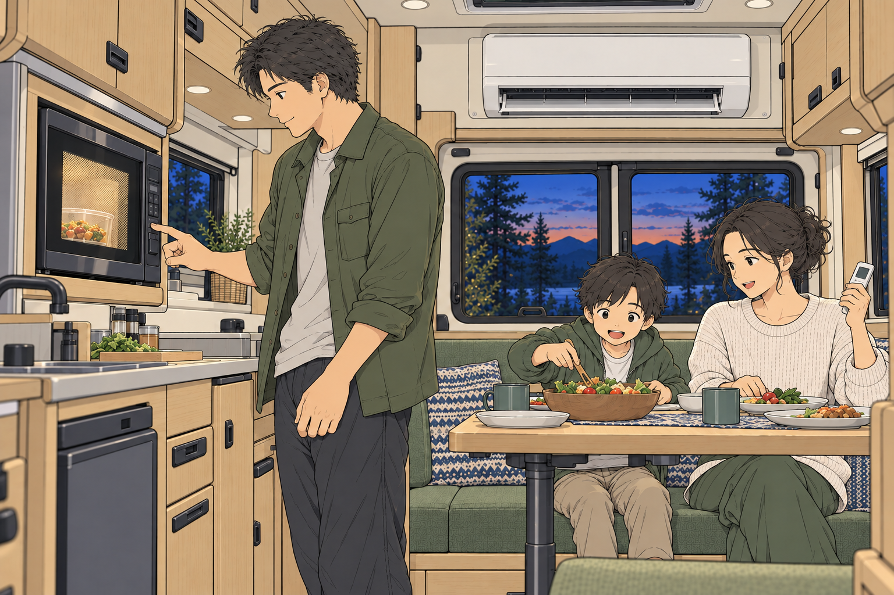
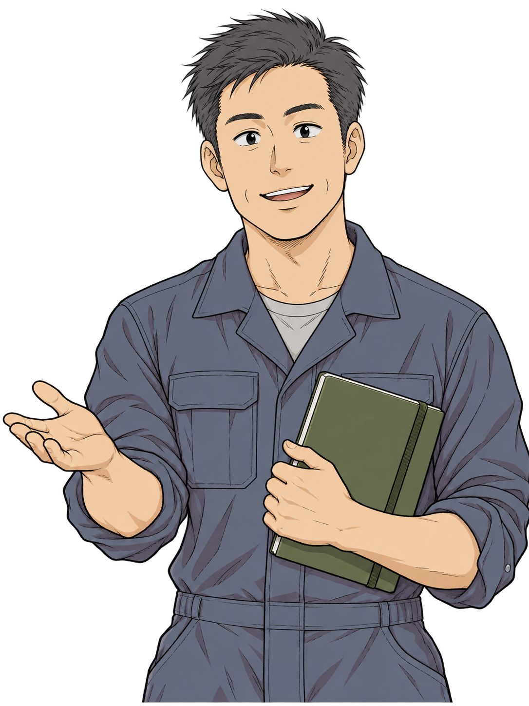
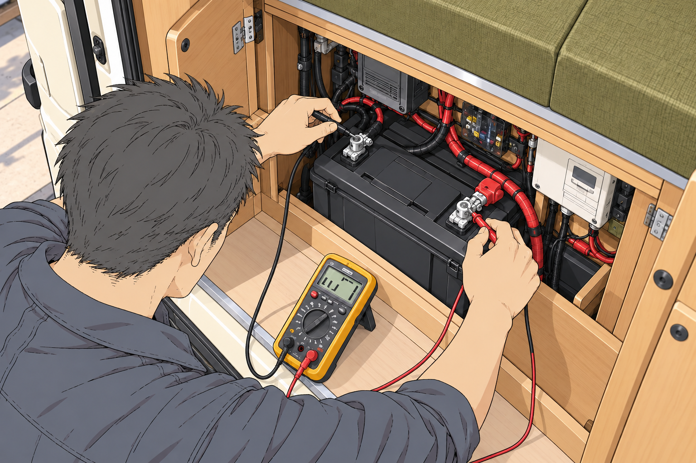

食事の時間

01できたてを、
できたてを、
家族で囲もう。
電子レンジで食事を温めて、みんなで食卓へ。使いたい家電から、愛車の電源を考えます。
01旅先で、したいこと
「連泊すると、残量が気になる」
「電子レンジも、エアコンも使いたい」
そんな電気の悩みから、ご相談ください。
左右にスワイプして見る
使える家電・同時使用・稼働時間は、設備構成と使用条件によって異なります。
02愛車に合う電源づくり
リチウムイオン化は、電源を見直す機会。
使いたい家電や旅の日数を伺い、
愛車に合う構成をご提案します。
リチウムイオン電池
照明・冷蔵庫・使いたい家電へ
容量
家電の種類と使用時間、旅の日数から、必要なバッテリー容量を考えます。
出力
消費電力や起動時の電力、同時に使う組み合わせを確認。インバーターなどを選びます。
充電
走行中・外部電源・ソーラーからの充電を、旅のスタイルに合わせて検討します。
容量が分からなくても大丈夫。
使いたい家電から、
一緒に考えましょう。

03私たちにできること
バッテリーだけでなく、愛車全体を。
今の設備を確かめながら、
これからの旅に必要な電源を考えます。

キャンピングカービルダー勤務
10年メカニックの経験クルマの仕事に携わって
30年パートナーの経験RV BASE Labは、千葉県君津市の整備工場。車両と設備の状態を確認し、ご希望に合う構成・費用・作業日程をご案内します。
関東運輸局長認証 自動車特定整備事業 第3-5923号
04相談の進め方
詳しい仕様が分からなくても大丈夫。
分かるところから、お聞かせください。
車種・年式、今の設備の写真、使いたい家電をお送りください。
車両と設備の状態を確認し、必要な構成・費用・作業日程をご案内します。
ご希望と作業内容をすり合わせてから進めます。お引き渡し時に、使い方もご案内します。
05よくあるご質問
家電の消費電力と、バッテリー・インバーターなどの構成によって異なります。使いたい機種や時間、同時に使う家電を伺って確認します。
充電器やインバーター、配線なども確認が必要です。現在の設備と、新しいバッテリーとの組み合わせからご案内します。
はい。使いたい家電、使用時間、旅の日数から一緒に考えます。分かる範囲の情報や写真からお聞かせください。
車両の状態、構成、作業範囲、部品の準備や予約状況によって異なります。ご希望を伺い、事前にご案内します。
次の旅に、電気のゆとりを。
サブバッテリーのリチウムイオン化。
まずは、愛車の話からはじめましょう。
ご来店前にご相談ください。
〒292-0455
千葉県君津市俵田729-3
© 2026 RV BASE Lab